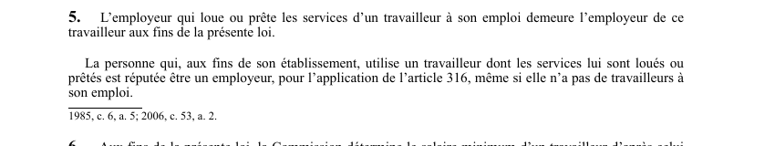

art-5-LATMP : location ou prêt de services : employeur
Un article du wiki ⚖️ Recueil législatif
🌐 LegisQuébec · 📄 PDF officiel (page 8)
Texte officiel : capture du PDF

🔗 Ouvrir a cette page : LATMP.pdf : page 8 · texte a jour au 20 février 2024
En bref
L'employeur qui loue ou prête les services d'un travailleur en demeure l'employeur aux fins de la loi.
- L'employeur d'origine demeure l'employeur du travailleur prêté ou loué.
- L'utilisateur est réputé employeur pour l'application de l'art. 316 (cotisations).
Voir aussi
- art. 4 · faculté : la LATMP est d'ordre public.
- art. 316 · droit : la CNESST peut exiger de l'employeur qui retient les services d'un entrepreneur le paiement de la cotisation due par cet entrepreneur, calculée le cas échéant d'après la proportion du prix correspondant au coût de la main-d'œuvre.
- art. 9 · le travailleur autonome qui, dans le cours de ses affaires, exerce pour une personne des activités similaires ou connexes à celles exercées dans l'établissement de cette personne est considéré comme un travailleur à son emploi.
- ↑ Loi : LATMP
Pages qui pointent ici (2)
- art-4-LATMP, présente loi ordre public Recueil législatif
- art-6-LATMP, fins présente loi commission Recueil législatif